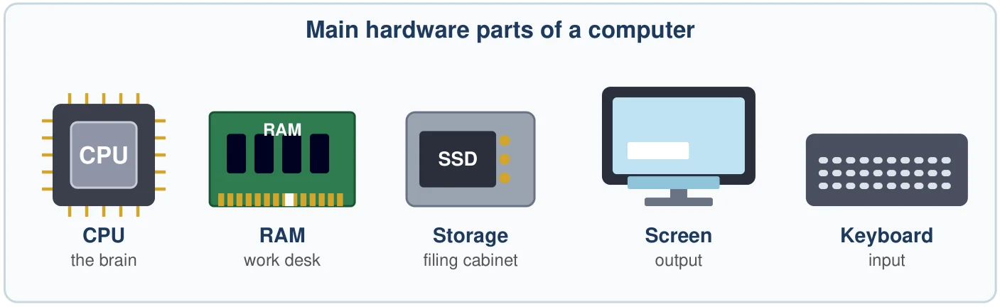
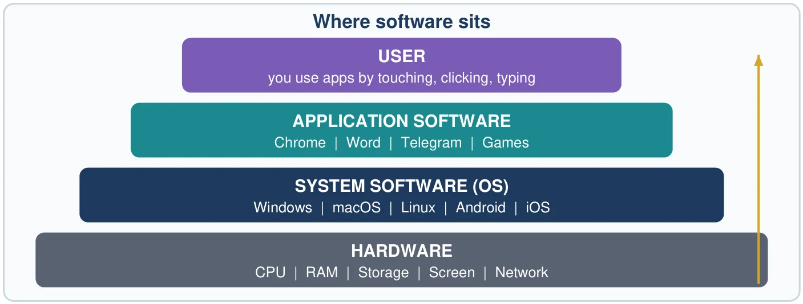

1. How a computer works
Everything a developer builds runs on a computer or a phone, and a phone is a small computer. Understanding the basic parts removes much of the mystery.
1.1 Hardware
Hardware means the physical parts you can touch.
| Part | Role | Everyday comparison |
|---|---|---|
| CPU (processor) | Executes instructions and does calculations | The brain |
| RAM (memory) | Holds data for programs that are running right now; erased when power is off | A work desk |
| Storage (SSD/HDD) | Keeps files and programs permanently | A filing cabinet |
| Input devices | Keyboard, mouse, touch screen, microphone, camera | Ears and hands |
| Output devices | Screen, speakers, printer | Mouth and eyes |
| Network card | Connects to Wi-Fi or cables | The telephone line |

Figure 1.1: Main hardware parts
1.2 Software
Software is the set of instructions that tells hardware what to do. There are two main kinds:
| Kind | What it does | Examples |
|---|---|---|
| System software | Manages the hardware and runs other programs | Windows, macOS, Linux, Android, iOS |
| Application software | Helps the user do a task | Chrome, Word, Telegram, Facebook, games |

Figure 1.2: Hardware, operating system, applications and the user
1.3 How code becomes a running program
Computers only understand binary: 0 and 1. Humans write code in readable languages such as Java or Python. A compiler or interpreter translates that code into instructions the processor can execute.
You write code → Compiler / Interpreter → Machine code → CPU runs it
1.4 Files, folders and units
- File: a named piece of data (photo.jpg, index.html).
- Folder (directory): a container for files. Developers organize projects in folders.
- Units: 1 byte = 8 bits; 1 KB = 1,024 bytes; 1 MB = 1,024 KB; 1 GB = 1,024 MB.
Review Questions
- What is the difference between RAM and storage?
- Give two examples each of system software and application software.
- What does a compiler do?
Was this lesson helpful?Found a mistake? Report it